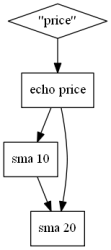

Event script is a small but high level flow oriented declarative programming language designed to facilitate the pre/post processing and analysis of symbolic and numerical time series and sequences datasets.
A script is a file with the ".tit" extension. A script defines a list of operations to apply on a dataset (or a set of datasets). Each line geenraly defines one operation. Each operation takes one or several input signals, and produces one of several output signals. The output of one operation becomes the input of an other one. You will see that some operations do not requiere any input (e.g. the calendar change point generation operation, reading of keyboard) and some other do not procude any signal output (e.g. the write to file operation, printing on screen).
One of the most particular feature of Event Script is that it does not have conditionnal and loop operators. A script is interpreted as a graph/flow of operations. Each operation processes its input, and send it to the next operations. "If"s are replaced by operations that can filter data. Because of this flow structure, event script can be seemingly applied on a dataset or on an online and continuous flow of data.
While event script has its own particular syntax (that you will lean in this tutorial), you can use any editor configured with the Perl syntax coloration help event script reading.
Event Script supposes input and output datasets to be Symbolic and Scalar Time Sequence (SSTS). A SSTS is composed of channels. Each channel is associated with a name (also called channel symbol) and a set of records. Each record is associated with a timestamp (represented as a double float) and a value (represented as a floating).
The following table shows an example of SSTS with three channels. Each record is represented by (x,y) where x is the timestamp and y is the value.
| Symbol | Records |
|---|---|
| e1 | (15.81,1) (16,1) |
| s1 | (5.,-5.1) (20.,5.2) (28,12) (28,13) |
| s2 | (1.,1.1) (2.,1.1) (5.81,12) (12,-1) |
Each SSTS channel is either an event or a scalar. Both types are stored similarly and only differ in the way the user wants to interpret them. Events generaly represent change points, while scalars generaly represent regularly (or semi-regularly) sampled measurements. We will also talk about status channels. A status channel is a scalar channel that can only have the value 0 or 1.
SSTS can also be represented graphically (see figure 1). You can see the drawing representation helping the differentiation between events and scalars.
You might be familiar with multivariate time series. This well-known representation is a special case of SSTS. Therefore, even if Event Script is designed to work on SSTS, it also perfectly work on time series.
SSTS can be used to represent a large variety of phenomenons. For example, an event channel can be use to indicate the purchase of an item, the activation of a sensor, or the start of a new day. Similarly, a scalar channel can be used to count the number of purchase of an item in the last 2 hours, the current temperature, or the numerical value of the current hour.
The simplest and most used file format to store time series is certainly the Csv format. A csv file is a text file that represent a two dimentionnal array. The fist column of the array contains a list of timestamps while the other columns contain the numerical values of the different scalar channels for each timestamps.
The csv format is very convenient to store and exange datasets: It is simple to write and read, and it is supported by many softwares. However, Csv files requiere all channels to be synchonized, and reading/writing Csv is a slow operation in comparison to more optimized binary formats. While Csv is a good first candidate, this tutorial also present several other formats supported by Event Script.
To run a script, launch the event script binary with the script file path as the first argument. The file path of the input dataset is specified with the "--input" argument. An empty script is a valid script.
Several "--input" can be provided in a single call. In this cases, all the input will be merged together before the script is applied.
The output are specified inside of the script (with the operator "save" for example). However, we will see later how to specify the output path from the command line using variables.
The "--graph" option is a very useful option to set Event Script to generate a PNG picture representing a graph representation of the script. GraphViz (http://www.graphviz.org/) needs to be installed on your computer to use this option. This feature is very useful to read and understand large scripts. The following figure shows the graphical representation of a script. You do not have to try to understand the script right now.
|
Example of script
$A = echo "price"
$A += sma $A 10 $A += sma $A 20 |
Becomes |

|
During the writing a complex script, it is generally useful to look and plot the intermediate and final results to ensure of the correctness of the script. Many plotting softwares are available for this task (e.g. GnuPlot, R, Matlab, Matplotlib, etc.). We however recommend the use of the Event Viewer software avalable here.
Here are some of the many features that make Event Viewer a good candidate to visualize event script results:
Each empty line or line starting with the character "#" is considered a commentary and will not be executed.
Each (non-commentary) line is composed of an operator name followed by a list of anonymous argument for the operator, followed by a list of named arguments.
Depending on the operators, some anonymous/named arguments can be optional. If they are not specified, they will be assigned to a default value.
Named arguments can be specified in any order. However the order of the anonymous arguments is important.
Event script allows two types of arguments.
The sma operator accepts two anonymous arguments. The first one is a signal argument. The second one is a non-signal numerical argument.
The " around arguments are optional. They are mostly useful when the argument has spaces.
Operations as well as their arguments are descripted in the Function reference.
Event Script supports two types of variables
Signal variables are used connect operations together. Signal variables can be seen as "pipes": On one side, one or several operations put signals into the pipe. On the other side, other operations continuously will get these signal. While not entirely accucate, signal variable can be seen as container of signal for static script execution : Some operations put signal in a variable. And next, other operations will take and process these signals.
Piping the result of an operation into a variable is done with the "=" keyword.
The result of an operator can also be aggregated to a signal variable with the operator "+=".
At the example of the example, $A contains two channels i.e. the result of the two sma. Note: the two sma results are not numerically added.
When supplied with a list of channels, most operations will be applied independently on each channel.
Non-signal variables are used to store non-signal arguments.
Setting a non-signal variable is done with the "set" operator.
Non-signal variables can be defined through the command line with the "--option" argument.
Passing non-signal variable throw the command line can be used to specify the output file path in the command line.
Non-signal arguments can be specified by an equation in Polish notation. Numerical Polish notation equations start with "=". String Polish notation equations start with "&".
Available numerical operators are: +, *, -, /, >, <,=, ^,>=, <=, !=, if, sin, cos, tan, log, rand, asin, acos, atan and sqrt. Available string operators are: +.
Event script operators are tailing operators. In other word, not operators can return at time t, a value computed with data from t' with t' > t.
The only exception to this rule is the "echoPast" that can "send data in the past". Note that the echoPast function does not work in online streaming execution.
This constraint ensures that a script runs the same way both online or on completed data.
Each channel of a SSTS is attached with a name. Variables behave like "pipes". Therefore, different variables can contain the same channel. Different variables can contains different channels with the same name.
The result of most operators is returned as a channel or a list of channel. The names of the result channels are automatically generated according the input channel names, operator name and operator arguments.
For example, the result of applying the sma operator with a parameter of 30 time units on the channel "price" will be named "price_sma[30]".
Generated names generaly have the following structure: {original channel name}_{operator name}[{argument values}].
Channel names' can be changed with the "rename" and "renameRegexp" operators.
The "rename" operator changes the name of a channel (or a list of channel) to a new given name.
Note that if several channels are provided as input, an error will be raised. However, if the option "keepAll:true" is specified, no error will be raised and all the input channels will be merged together.
RenameRegexp changes the name of a channel (or a list of channel) to a new name defined by a string replacement regular expression.
The most basic (and useful) operators are: echo, print, sma, filter, save and saveBufferedCsv.
Echo just repeats a signal (or a set of signal). If the signal name starts with #, the argument is considered as a regular expression applied on all available channels in memory.
Prints (in the console) the name and statistics of the time sequences inside of a signal variable. An optional label argument allows to "label" the output. If every:true, all the event of the time sequence are individually printed.
Filters the channels coming from a signal variable with a regular expression.
Sma computes a tailing simple moving average on the data.
Sma has two additional optional parameters.
SaveBufferedCsv saves the content of a signal variable to a CSV file.
Note that if all channels are not synchronized, the csv will be filled with "NA" values. Additionally, since all channel names need to be available to write the csv header, this operation will keep a full copy of the exported data in memory until the end of the script execution where the csv file is written.
Saves the content of a signal variable to a Evt file.
Unlike saveBufferedCSV, save writes immediately the signal in the file, and remove it from memory.
Event script support four dataset formats.
A Csv file is a text file that represent a two dimentionnal matrix. The first column contains timestamps while the other columns contain the numerical values of the different channels for each timestamps.
Csv required all the channels to be synchronized.
A Evt file is a text file where each line specify an event or scalar update. Each line is {time stamp} {signal name} {signal value}.
Evt format is especially useful when channels are not synchronized.
A Bin file is a compact binary encoding of a evt file. The binary format is faster to read and write than the evt and csv formats. For this reason, the binary format is preferable to the evt and csv format in large datasets. Like the evt format, the bin format handles naturally non-synchronized channels.
An sevt is a text file containing paths to other datasets files.
The "dataset" commands accept three options. The first option is the path to the dataset. The second option (optionnal) is a prefix to add to each channel names. The last option (also optionnal) is a regular expression to filter the channel to load in memory
If several groups of datasets are separated by the "flush" command, the dataset times will be shifted so that different groups do not overlap. The "sequence" options allows to define the value of channel called "sequence" that will be set at the begening of each group. The time distance between groups is defined with the "offset" options.
By default, dataset path are relative to the current directory of the running process.
The sevt format support many more options that will be described later. Instead, you can specify for the path to be relative to the sevt file path with the option "basepath relative".
By default, the input datasets are defined through the command line with the "--input" options. Symmetrically, the output datasets are defined in the script with the saving operators. To clarify the script, the user can also specify the input and output dataset at the beginning of the script with the "AUTODATASET" operator. Autodataset also allows applying script on directories. In this case, the script will be applied iteratively on each file of the directories, and the result for each file will be saved in a separate file. The path of the output file will be automatically put into the %output non-signal variable.
AUTODATASET requires three named options (the last one is optional).
Event script can be executed in three possible modes: Static, streaming and real-time streaming. The mode can be specified by the "--mode" command line option. By default, the mode is set to STATIC.
The static mode (default) loads all the input dataset in memory, and applies each operation one after one another. Intermediate results of operations are automatically discarded during the script execution as soon as the algorithm detects that it will not be used anymore. Because each operation is applied one after another, the static mode is very quick. The static mode is however not suited if the dataset cannot be loaded in memory.
The streaming mode greedily reads and processes a dataset input file line by line. This process is much slower that the static mode, but it has very small memory consumption. For example, if applying of 10s moving average on a signal using the streaming mode, at most 10s of signal will be keep in memory at any time.
Finally, the real-time streaming mode works similarly the streaming mode, but override the input event timestamp with the computer own clock. This mode is suitable for real time online analysis.
As an example, suppose the following program that will be executed in static and streaming mode.
$A = sma "price" 10
$B = derivative $A
Save $B file:output.evt
Static execution
Streaming execution
While the execution of Event Script is done in flow, the parsing of the script file is interpreted sequentially. Therefore, a signal variable is not equivalent to a flow pipe.
This concept is illustrated in the following example:
In this script, the variable $A refers to different flow pipes after each line of the script.
At the end of the script, $A contains "price", "price_sma[10]","price_sma[20]","price_sma[10]_sma[20]".
This script is represented graphically by: